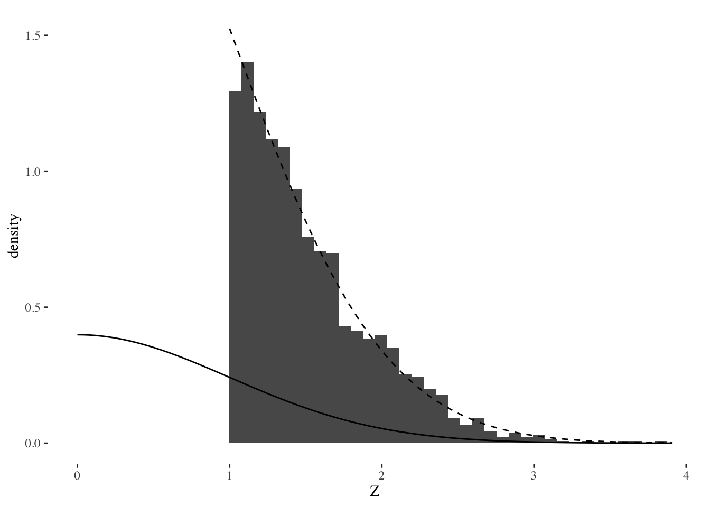

Estimate Std. Error t value Pr(>|t|)
chocolateTRUE 19.1 3.6 5.3 0.0000009
fruityTRUE 8.9 3.6 2.5 0.0147319
peanutyalmondyTRUE 9.5 3.4 2.8 0.0073720
crispedricewaferTRUE 8.4 4.5 1.9 0.0652527
hardTRUE -5.7 3.3 -1.7 0.0887116
sugarpercent 8.0 4.1 1.9 0.0569311Overly honest research methods?
A high profile case of a scientist retracting multiple papers due to p-hacking is recently gaining new attention due to a BuzzFeed article. Hopefully this will raise awareness and convince some that “keep hammering away at your data until you find want you were expecting” is a poor way to do science. But it’s possible to get things wrong, for the same reason, no matter how well-intentioned we may be. Even if we aren’t specifically seeking significant \(p\)-values, we can end up with biased results due to model selection. To see why, check out this earlier post on model selection bias. In this post I will describe a method to protect ourselves from this bias and compute adjusted \(p\)-values that are valid even though we’ve done model selection.
Model selection with forward stepwise
We’ll pick up on the same example from a previous post:
[…] consider the
candy_rankingsdata from the fivethirtyeight package. The outcome variable is how often a given candy won in popularity matchups against other candies, and the predictor variables are various properties like whether or not the candy has chocolate, whether or not it’s fruit flavored, how sugary it is relative to other candies, and so on. There are 85 candies and 11 predictor variables in the dataset.
This time we’ll use the actual response variable, and run forward stepwise with AIC to pick a subset of the predictors that are highly predictive of the outcome (win percent). The resulting model, along with the biased \(p\)-values that popular software computes by default, is given below.
These \(p\)-values are probably too small. The model selection method chose variables that seemed to be predictive of the outcome. The way \(p\)-values are computed is to consider how extreme the test statistic \(T\) is under the null hypothesis: \(P(T > |t|)\). But the model selection procedure picks variables that tend to have large observed values of \(|t|\), whether or not the null hypothesis for any one of them is true. How can we correct this? By the end of this post we’ll have adjusted \(p\)-values for this example, but first we need to understand how that adjustment works.
Adjusted inference by conditionional probability
One approach, often referred to as selective inference, is to use conditional probabilities when computing \(p\)-values. Consider a random variable \(M\) representing which model is chosen by the model selection method, and let \(m\) be the observed value of \(M\) after running the algorithm (e.g. forward stepwise) on our data and getting a specific model. To compute conditionally adjusted \(p\)-values, we use \[ P(T > |t| \mid M = m) \] This conditional probability law usually has a simple form. For example, if the test statistic has a \(t\)-distribution, then the conditional law is usually a truncated \(t\). The specifics depend on the kind of model selection algorithm being used, and working them out is an area of ongoing research in statistics. During my PhD, I worked on a few cases (groups of variables, cross-validation) as part of my dissertation. To understand how/why the conditional law works, let’s consider an example that’s simpler than forward stepwise.
Marginal screening example
Suppose that instead of regression, we are solving a many-means problem where we want to select the largest effects. (Regression is similar to this when the design matrix is orthogonal). That is, we have many effects \(z_i\) for \(i = 1, \ldots, p\) and the selection rule we use is to choose \(z_i\) if \(z_i > 1\). Then we want to do a one-sided test to see if those \(z_i\) are significantly large. We can think of this procedure as first screening away the majority of the data which we think is just noise, and then testing what made it through the screening procedure. I’ll generate data under the global null hypothesis where every effect is actually zero, and then plot some results.
Warning: Removed 2 rows containing missing values (geom_bar).
This plot shows three things:
- A histogram of the selected effects.
- The solid line shows the standard normal distribution. The upper tail areas of this distribution would be used for standard, unadjusted \(p\)-values.
- The dashed line shows the truncated, conditional distribution \(Z | Z > 1\) for a standard normal \(Z\).
If we used the tail areas of the standard normal to compute \(p\)-values, these would be very small, even though the data was all generated under a global null hypothesis. This shows that the selection effect can invalidate inference, leading to a high type 1 error rate. But it’s pretty clear from the plot that the conditional distribution fits the data very well: if “significant” means extreme according to this distribution, then type 1 error rate would be small, it would match whatever nominal threshold \(\alpha\) we decided.
The selectiveInference R package
Let’s return to our first example about forward stepwise.
The details for computing \(p\)-values with conditional probability when model selection is more complicated–like using forward stepwise with AIC, or the LASSO with cross-validation, etc–are harder than the marginal screening case. But fortunately, there is an R package for it: the selectiveInference package available on CRAN! This package is still under development, and its authors include Ryan Tibshirani, Rob Tibshirani, Jonathan Taylor, Stephen Reid and some other guy. The package currently does not support R formulas, so first we need to create a model.matrix, then we’ll run forward stepwise again with the fs function, then we’ll compute adjusted inference for the fitted model using fsInf. These last two functions are among several others in the selectiveInference package, including ones for doing all of this with the LASSO instead of forward stepwise.
Call:
fsInf(obj = fit, type = "aic", ntimes = 1)
Standard deviation of noise (specified or estimated) sigma = 10.703
Testing results at step = 6, with alpha = 0.100
Var Coef Z-score P-value LowConfPt UpConfPt LowTailArea UpTailArea
1 19.147 5.233 0.171 -14.225 37.970 0.05 0.050
4 9.483 2.697 0.559 -43.440 13.021 0.05 0.049
2 8.881 2.445 0.472 -35.763 26.424 0.05 0.050
6 8.385 1.833 0.515 -61.565 46.348 0.05 0.050
10 7.979 1.894 0.355 -44.222 72.414 0.05 0.050
7 -5.669 -1.690 0.358 -48.097 30.090 0.05 0.050
Estimated stopping point from AIC rule = 6There’s a lot of output here, but let’s focus on the adjusted \(p\)-values. We’ll put them together in a readout with the unadjusted ones:
Estimate Pr(>|t|) Adj.Pr(>|t|)
chocolateTRUE 19.15 0.000000898 0.171
peanutyalmondyTRUE 9.48 0.007372014 0.559
fruityTRUE 8.88 0.014731896 0.472
crispedricewaferTRUE 8.39 0.065252715 0.515
sugarpercent 7.98 0.056931100 0.355
hardTRUE -5.67 0.088711566 0.358The adjusted \(p\)-values in the right column are all much larger than the unadjusted ones. In general, adjusted \(p\)-values will be larger, but by how much depends on a lot of specifics. In this case, and at the usual \(\alpha = 0.05\) level, we went from 3 significant effects without adjusting for selection bias to zero. This reflects a fundamental tradeoff: the more we use the data to search for interesting things, the less surprised we must be about what we find. Otherwise, we may just be fooling ourselves, and maybe even end up needing to retract lots of papers…
I hope this post was a useful introduction to the basic idea of using conditional probability to adjust for model selection, and makes more people aware of the selectiveInference package. This project is also on github. In future posts I will describe more examples, including other approaches to adjusting inference for model selection bias.